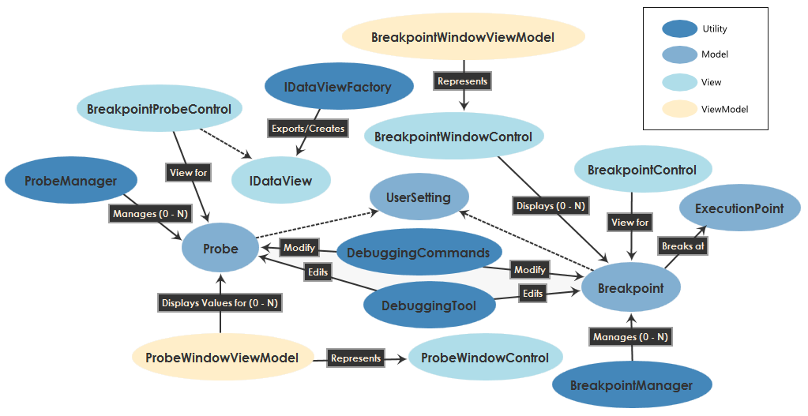

The Debugging System
Although the Diagram SDK editor is not aware of execution, it provides a debugging system with a set of base classes, helpers, visual assets, and MEF contracts to support debugging.
Debugging System Architecture
The following diagram illustrates the high-level architecture of the debugging system:

Debugging System Theory of Operation
The debugging system consists of components for modeling, visualizing, customizing, and interacting with Probes and Breakpoints.
Modeling Probes and Breakpoints
The Probe and Breakpoint classes are UserSetting base classes available in the Diagram SDK, designed to support the aggregation and management of different types of probes and breakpoints (e.g. on a node vs. in text code) via the ProbeManager and BreakpointManager classes. These manager classes in turn are used by clients, such as the BreakpointWindowViewModel, ProbeWindowViewModel and DebuggingToolViewModel.
Visualizing Probes and Breakpoints
The Diagram SDK supplies the following default visual controls for debugging:
The Diagram SDK also provides a set of default images, primarily used by DebuggingCommands for debugging-related buttons.
Customizing Probes and Breakpoints
Probe and Breakpoint can be subclassed to store additional information about location/configuration. A NodeViewModel or a DocumentEditControl can implement IDebuggablePresentation to provide specific visuals for breakpoints. The vast majority of the commands in DebuggingCommands are RoutedCommands so that the source (ViewModel or DocumentEditControl) can override to provide specific CanExecute() logic.
The Diagram SDK supplies the IDataView and IDataViewFactory interfaces as the plug-in mechanism to provide custom visualizations for data. For example, VI probes and Data Depot currently use this mechanism. Currently, all specific views are provided by VI. In the future, a set of standard data views might be pushed down to MocCommon or PlatformFramework.
Interacting With Probes and Breakpoints
The DebuggingTool, accessed via DebuggingToolViewModel, is a DesignerTool that provides typical debugging interactions, such as panning when executing, clicking on a wire to show a probe, and displaying debugging adorners for probes and breakpoints. It also has built-in support for wire highlighting and disabled visualization for nodes that have not been executed.